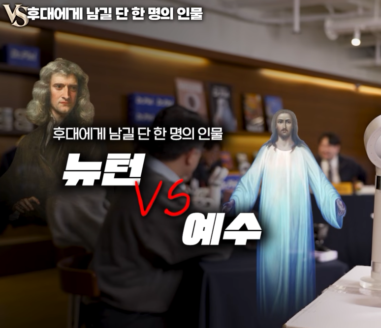
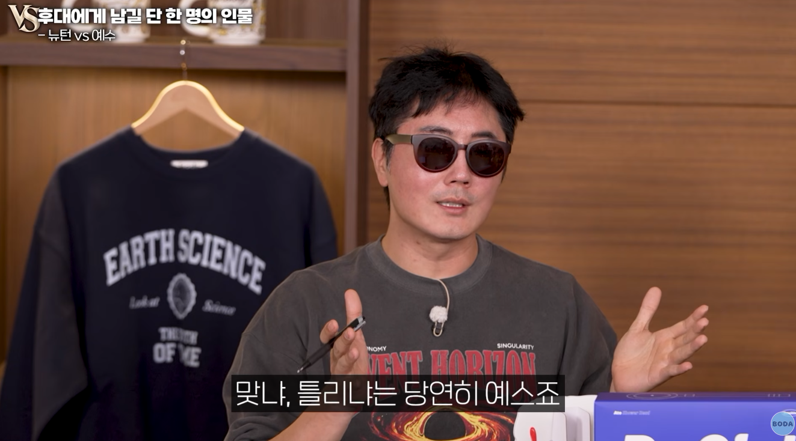

뉴턴이 나온다음에 지상과 천상을 통합되어 보게 됐다 안카요!
응 프린키피아 몇명이나 이해함?
아니 그쪽사람한테만 영향이 있잖아!!!
싸우는것도 다 영향을 미치고 있는거다

예수는 정당성에 대한 논란부터 발생하지 않는가!
예수때문에 인생을 건 사람들이 엄청 많다!
마오쩌둥 때문에 3000만이 죽었다!!!
ㅋㅋㅋㅋㅋㅋ 사실 예수때문에 더 죽었음요 ㅋㅋㅋㅋㅋㅋㅋ
그 이야기를 남겼다간
멸망후 새로 일어설 인류가 또 개지랄이 난다!
진정하세요. 뉴턴도 신학자였어요.
느그 뉴턴 우리팀이네!!?!???!?!!!!
ㄴㄴ 뉴턴이 남으면 예수도 뒤따라온다는 것.
예수님 수학 못했죠!
학교를 안갔어 ㅎㅎㅎ
회식비를 건 과학, 역사 교수님들의 막장 토론임.
WWE 막장토론이니까 역사쪽 교수님들이 그쪽업계 광신도라고 생각하지 말것.
과학적 사실들은 꼭 남겨야 할 필요가 있나? 싶음. 과학은 이미 우주에 세겨져있음. 그러니까 예수를 남기는게 과학적으로 이득임